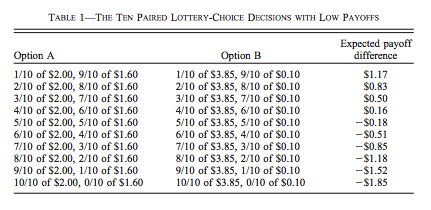

Risk¶
In general, the vast majority of us dislike risk.
{kind=link}
Imagine we offer you two retirement plan:
Plan A: sure income of: 50 000/an
An uncertain retirement plan (say because it depends on returns)
Plan B
50% chance 10 000/yr
50% chance 90 000/yr
Even if the expected income is 50 000 in both cases, you are very likely to prefer Plan A…
Risk and Return¶
Imagine we modify Plan B to get:
Plan C
50% chance 10 000/yr
50% chance 100 000/yr
or even Plan D,
Plan D
50% chance 10 000/yr
50% chance 150 000/yr
Expected income is now higher than with plan A. If we keep increasing the upside level of income, you will at some point prefer the risky plan. Hence, preferences in risky situation are not only function of the expected gain but also risk (probabilities and payoffs). As of now, our theory does not cover these cases.
Expected Utility (EU)¶
Lotteries
Lottery \(\mathcal L = (p,X \;; 1-p,Y)\) : with probability \(p\) of getting \(X\), and probability \(1-p\) of getting \(Y\).
The expected wealth from the lottery is \(\mathbb{E}_{L} = pX + (1-p)Y\).
To represent preferences, taking the expectation of utility is intuitively appealing:
\[\mathbb{E}_{{ \mathcal L}} (u) = p\times u(X) + (1-p) \times u(Y)\]
Preferences over Lotteries
The consumer prefers the lottery \(\mathcal L_1\) to lottery \(\mathcal L_2\) if
\[\mathbb{E}_{{ \mathcal L_1}} (u) > \mathbb{E}_{{ \mathcal L_2}} (u)\]
The representation of preferences by expected utility is due to von Neumann et Morgenstern often abbreviated vNM preferences.
This formulation imposes several testable restrictions on choices. We will come back to this later.
Example
If \(u(X) = \sqrt{X}\) and the consumer faces lotteries \(\mathcal L_1 = (0.5,0\;; 0.5,16)\) and \(\mathcal L_2 = (1,6)\).
Exercise A: What is the expected return of each lottery?
Exercise B If the consumer has vNM preferences (expected utility), which lottery does he prefer?
Exercise C: Does the utility function \(u(X) = X\) give the same choice?
In a situation with certainty, utility is ordinal: only the ordering matters. However, in a risky situation, expected utility is cardinal, because it depends linearly on probabilities. Hence, monotone transformation (stricly increasing) do not preserve preferences. However, affine transformations of the form \(\widehat u = a u +b\) with \(a>0\) yield the same preferences.
\[\begin{split}\begin{aligned} \mathbb{E}_{L_1} \widehat u \geq \mathbb{E}_{L_2} \widehat u & \iff a\mathbb{E}_{L_1} u + b \geq a\mathbb{E}_{L_2} u + b \\ & \iff \mathbb{E}_{L_1} u \geq \mathbb{E}_{L_2} u\end{aligned}\end{split}\]
Risk Aversion¶
Risk attitudes may vary from one person to the next:
Risk aversion: If \(L = (p, X\;; 1-p,Y)\) and we denote the expected value \(Z = p X + (1-p)Y\), then the consumer is averse to risk if he prefers \(\mathcal L' = (1,Z)\) to \(\mathcal L\).
Risk Loving: He (she) prefers \(\mathcal L = (p, X\;; 1-p,Y)\) to \(\mathcal L' = (1,Z)\)
Risk Neutrality: The consumer is indifferent bewteen \(\mathcal L = (p, X\;; 1-p,Y)\) and \(\mathcal L' =(1,Z)\).
What do we observe?
Lots of risk aversion
A bit of risk loving, e.g. casinos.
Risk aversion and Concavity¶
Risk aversion
The consumer has a utility function \(u\). In a vNM context, our only degree of freedom to model risk attitudes is the utility function. Properties of \(u\) are therefore central.
Fix two states \((X,Y)\) and the probability \(p\) that \(X\) is realized. The expected payoff is \(Z = pX + (1-p)Y\).
Risk aversion implies
\[u(Z) > pu(X) + (1-p)u(Y).\]
A function \(u\) which fits this inequality needs to be concave (see the math tools). In statistics, this result is Jensen’s inequality which arises when the function is concave. The risk loving case corresponds to a convex function.
{kind=link}
In the wealth-utility space, consider a lottery on \((X,Y)\) with probability \(p\) that \(X\) is realized. Starting on the horizontal axis, expected wealth is between \(X\) and \(Y\) since \(p\) is between zero and one. On the vertical axis, we can also do the same thing for expected utility, with the same \(p\). Varying \(p\), we get the straight line that attaches points \((X,Y)\) to the utility function. Since the function is concave, this line (or cord) is below the function itself. So utility evaluated at expected wealth (point A) is always above expected utility (point B). This holds for all \(p\).¶
Risk neutrality
If an individual is risk neutral, there is an indifference between
\[\mathcal L = (p, X\;; 1-p,Y) \quad and \quad \mathcal L' = (1,Z)\]
The utility function is therefore constrained to be linear in wealth \(u(X) = a X + b\), with the special case \(u(X) = X\).
Measuring Risk Aversion¶
How to measure risk aversion? How do we compare two individuals and say that one is more risk averse then the other? Two measures are useful for this purpose: the coefficient of absolute and relative risk aversion.
Absolute risk aversion coefficient:
\[A(X) = -\frac{u''(X)}{u'(X)}\]
Relative risk aversion coefficient:
\[R(X) = -\frac{u''(X)X}{u'(X)}\]
Why these two measures? Since risk aversion si related to concavity, both measures increase when the second derivative increases (there is a negative sign in front since second derivative is negative when function is concave). Then, we normalize by marginal utility \(u'(X)\), to fix units since \(u\) is ordinal. Another way of thinking about it is that it is the percent change in the marginal utility.
The absolute measure allows to look at risk aversion for lotteries involing absolute payoffs. The relative coefficient allows to look at the degree of risk aversion for a lottery which is proportional to wealth.
How do we measure this coefficient? One method is the multiple price list (MPL). Holt et Laury (2002) have used MPLs to measure risk attitudes.
A multiple price list presents two lotteries under different probability and payoff configuration. The respondant has to choose the loterry he prefers. There is often an incentive mechanism which rewards participants. Here is an example from Holt and Laury:
{kind=link}
We could use a utility function of the form,
We can show that \(R(X) = r\), and therefore this utility function is often referred too as CRRA (constant relative risk aversion).
{kind=link}
Insurance¶
The insurance market exists in part because the population is generally risk averse. There exists insurance for pretty much every risks you can think of. Even our governments set up what are called social insurance program to help individuals when they face hardship (think of the Employment insurance system in Canada).
Take unemployment. Consider a simple example with two workers who can be in the following states:
Employed with probability 0.5, income of 100
Unemployed with probability 0.5, income of 0
Denote realized incomes of the two workers \(I_i\) (\(i=1,2\)). An employment insurance scheme may mandate that both receive \((I_1+I_2)/2\) no matter their employment status.
Insurance is beneficial ex ante (before the risk gets realized) for the two agents if they are risk averse:
Without insurance: expected utility of each is \(.5 [u(0) + u(100)]\)
With insurance, there is a 25 % probability that both get 0, 50% that one works, 25% that they both work. Hence, expected utility of each agent is \(.25[u(0) + 2u(50) + u(100)]\).
According to vNM preferences, insurance is beneficial if
\[.25[u(0) + 2u(50) + u(100)] > .5 [u(0) + u(100)]\]
or if \(u(50) > .5[u(0)+u(100)]\). Hence, we need the utility function \(u\) to be concave or the agent to be risk averse (again Jensen’s inequality).
In practice, employment insurance could be informal. But enforcing payments after risks are realized may be costly. The worker who did not loose his job may not want to share with the other. Hence, employment insurance schemes lower these costs but enforcing the payment of premiums and benefits. The same goes for other insurance markets.
The other advantage of having an insurer is that the benefit to consumers of insurance grows with the number of insured individuals. For this, we need to invoke the law of large numbers.
Law of Large Numbers
Consider a random variable \(Z\) equal to \(X\) with probability \(p\) and \(Y\) with probability \(1-p\)
If \(Z_1, \cdots , Z_n\) are independent with the same distribution \((p,X \;; 1-p,Y)\) then
\[si\; N \to +\infty,\quad \frac{1}{N} (Z_1 + Z_2 + \cdots + Z_n) \to pX + (1-p)Y\]The average of realizations, which is still random when \(N\) is small, becomes almost certain when N tends to infinity.
Mutualization
When a large number share the risk, risk is eliminated trough mutualization. The insured receive exactly the average.
If agents are risk averse, this result is admirable.
Insurers need to issue debt to finance their operation. This debt, often in the form of corporate bonds, needs to reward investors for the risk inherent to each insurer. Insurers who are more risky, perhaps because their portfolio is less diversified (smaller), will need to pay a premium on their debt. This in turn may translate into higher premiums.
Insurance and Entrepreneurship¶
Becoming entrepreneurs
An individual has wealth of 9 and may decide to keep this wealth or use it to start a business. His final wealth, if he starts a business can be represented as a lottery: \(\mathcal L = (.5,0 \;; .5,25)\). His vNM preferences are represented by \(u(X) = \sqrt{X}\).
Exercise G: Does he start the business?
Angel Investors
Instead of investing alone, the entrepreneur may obtain some seed money from an angel investor. Suppose he gives half the capital for half the profits from the business.
The entrepreneur keeps 4.5 with certainty if he starts the business (the other half is given by the angel investor). In exchange he gives up a bit of profit if things go well.
The lottery is now \(\mathcal L' = (.5,4.5 \;; .5,17)\)
Exercise H: What will be his choice?
The show, Les Dragons (Dragon’s Den) from Radio-Canada and CBC provides a direct illustration of what is happening. Participation from one of the Dragon is always conditionnal to a share of the profits. Negociation takes place on the share of profits that the entrepreneur needs to give up in order to obtain an investment from the Dragon. Here is an example (in french) of two entrepreneurs who drove a hard bargain…
In addition to private equity firms who provide this type of insurance, public organizations also do this, for example Investissement Québec, or unions, such as FTQ and Fondaction.
Critics of Expected Utility¶
Allais Paradox
Ellsberg Paradox
Kahneman et Tversky: Perspectives
Choice Experiment I
Draw an integer number between 0 and 99 with probability 1/100 for each integer integer:
Lotteries |
0 |
1-10 |
11-99 |
\(L_1\) |
50 |
50 |
50 |
\(L_2\) |
0 |
250 |
50 |
Choice Experiment II
Now, consider another pair of lotteries with the same rules for picking a number.
Lotteries |
0 |
1-10 |
11-99 |
\(L_3\) |
50 |
50 |
0 |
\(L_4\) |
0 |
250 |
0 |
Maurice Allais and his Paradox
Exercice I: Show that \(L_1 \succ L_2\) and \(L_4 \succ L_3\) are not consistent with expected utility.

Read the story behind the paradox. Munier (1991)
Choice Experiment III
An urn consist 90 balls. 30 are red. The other 60 are either black or white. The proportion of white and black balls is not know. We ask you to make a choice between these lotteries:
Lotteries |
red |
black |
white |
\(L_1\) |
50 |
0 |
0 |
\(L_2\) |
0 |
50 |
0 |
Choice Experiment IV
Do the same in this context.
Lotteries |
red |
black |
white |
\(L_3\) |
50 |
0 |
50 |
\(L_4\) |
0 |
50 |
50 |
Ellsberg Paradox
Exercise J Show that the combination of choices \(L_1 \succ L_2\) and \(L_4 \succ L_3\) is inconsistent with expected utility for any beliefs about the proportion of white or black balls.
Mr. Ellsberg is well known for this paradox, but perhaps much more for his battles with the American government. Pentagon Papers
Kahneman and Tversky: Perspectives
The authors, both receipients of a Nobel, show that we are influenced by perspectives (often named framing) when we make choices, in particular when risk is involved:
Imagine a new virus could kill 600 individuals. Two interventions are shown:
(Positive perspective): A) 200 are saved, B) 1/3 probability that 600 are saved, 2/3 no one is saved.
(Negative perspective): C) 400 will die, D) 1/3 probability no one dies, 2/3 probability they all die.
In practice, A is more popular than B, but D is more popular than C. In terms of lives saved, A is the same lottery as C and B as D.
If these framing effects are of interest, you are encouraged to read: Khaneman and Tversky (1979)
Python Risk Example¶